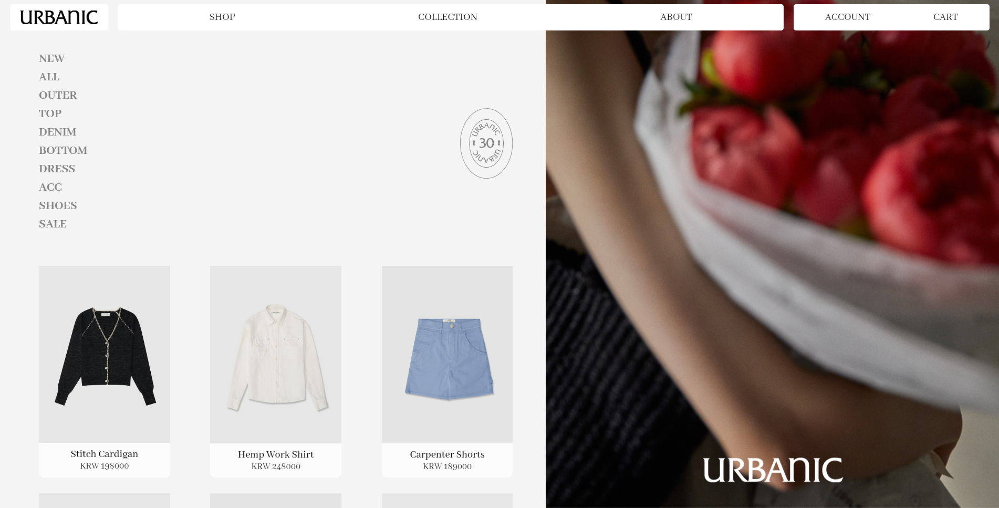
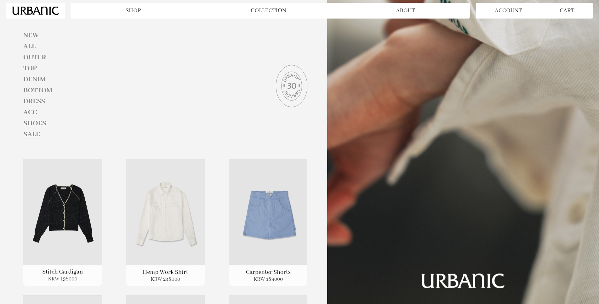
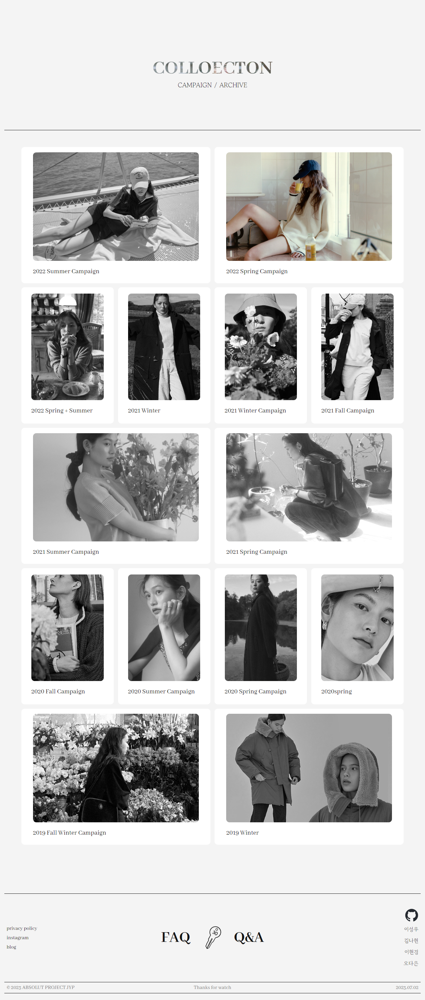
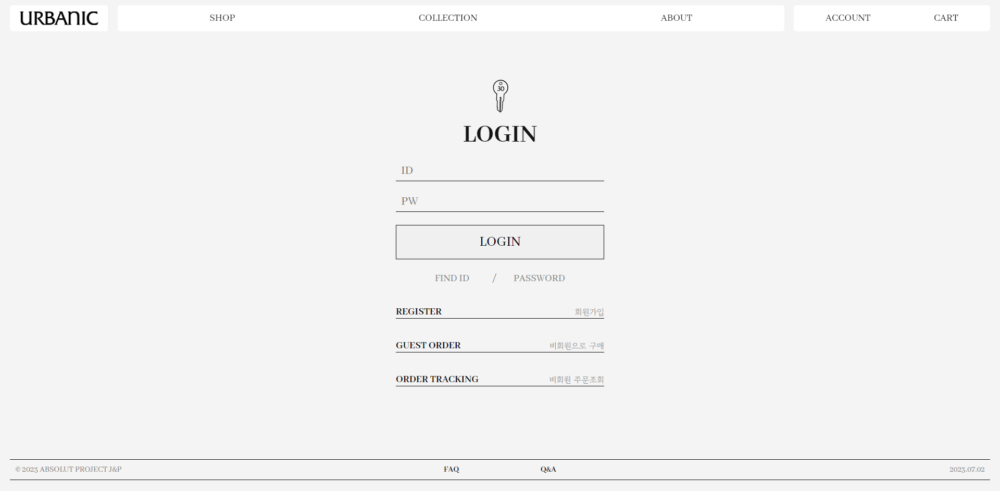
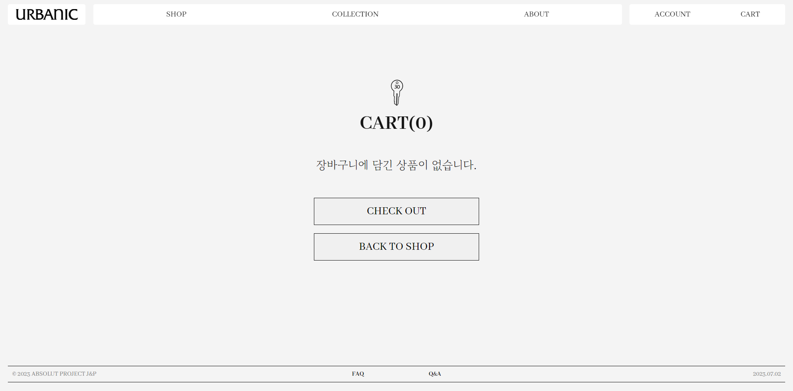

Style Guide
Main Keyword
세련됨, 차분함, 우아함
COLOR CONCEPT
#F4F4F4
Background
#131313
Almost text
#EEECEC
Backdrop filter
#858585
Footer slide
제품 및 룩북의 사진들이 가진 다채로운 컬러를 극적으로 강조하고, 브랜드 자체의 세련되고 차분한 분위기를 유지하기 위하여 전체적으로 흑백의 톤을 유지하고 베이스 컬러를 무채색으로 사용하였습니다.
FONTS
URBANIC30
Friz Quadrata Regular
AGOS MUNI
Abhaya Libre
내부 텍스트
Noto sans kr
타이틀에 사용된 폰트는 기존 브랜드 로고에 사용된 폰트를 그대로 사용하였으며, 작은 텍스트들에는 Noto sans kr을 적용하여 깨끗하게 정리된 분위기와 가독성을 주었습니다.
Prototype





Review
Good
전체적으로 실수나 문제점이 발생한 상황을 어려워하거나 힘들어하지 않고 긍정적으로 해결하는 분위기로 작업을 진행할 수 있어 좋았습니다. 또한 여러 의견을 주고받고 논의하여 더 나은 효과를 사용하여 처음 구상보다 더 발전한 결과물을 보일수 있었던 점, 서로를 북돋아 주는 분위기 덕분에 쳐지는 일 없이 빠르게 기간 내 진행할 수 있었습니다.
Bad
- 진행이 빨랐던 만큼 조금 더 보완할 수 있었던 파트를 제대로 눈여겨보지 못함
- 맡은 부분을 구현하는 개개인의 속도가 달라서 배분된 task의 양이 달랐음
Takeaway
- git hub의 team 사용과정에서의 주의점을 숙지하게 된 점
- 단기적으로 주어진 목표에 집중하여 우선순위를 맞추고 차례대로 행동할 수 있는 구상력
- 타인의 코드를 읽고 이해하여 수정하는 과정을 통해 웹페이지의 구성 이해 능력 향상
UP TO